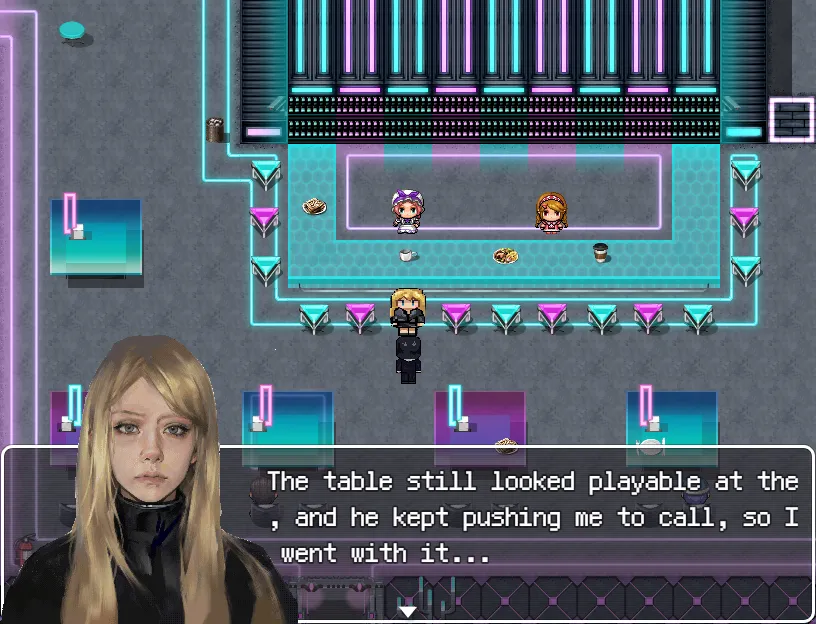

01
A framed gamble
After a runaway gamble, Iris is recorded as the sole person responsible.
However, she was just an agent gambler who bet on behalf of others, but overnight she was burdened with huge debts, and was identified by the system as the main culprit.
In order to prove her innocence, she had to return to the closed and luxurious private casino.
A place that devours secrets and lies.
